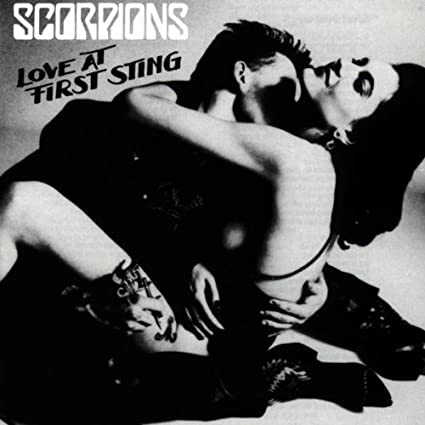

Love at First Sting

Released 27 March 1984
Recorded 1983-1984
Genre Heavy Metal. Glam Metal
Length 40:55
Producer Dieter Dierks
Love at First Sting is the ninth studio album by German heavy metal band Scorpions. It was released on 27 March 1984 on Harvest/EMI in Europe and Mercury in the US. The album contains "Rock You Like a Hurricane", "Still Loving You", and "Big City Nights", three of the band's most famous songs.
| Love at First Sting - Songs | ||
|---|---|---|
| 1. | Bad boys Running Wild | 3:56 |
| 2. | Rock You Like A Hurricane | 4:23 |
| 3. | I'm Leaving You | 3:45 |
| 4. | Coming Home | 5:00 |
| 5. | The Same Thrill | 3:32 |
| 6. | Big City Nights | 4:42 |
| 7. | As Soon As the Good Times Roll | 5:03 |
| 8. | Crossfire | 4:36 |
| 9. | Still Loving You | 6:23 |